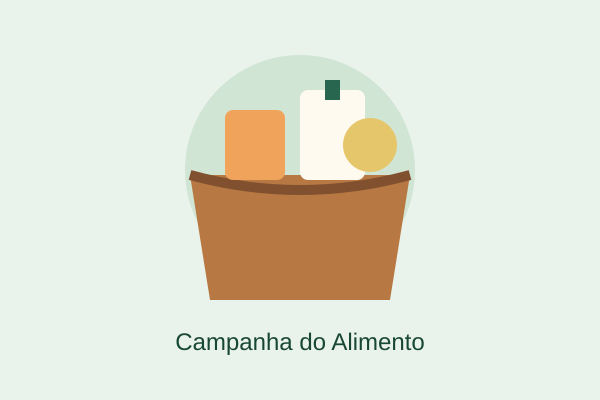
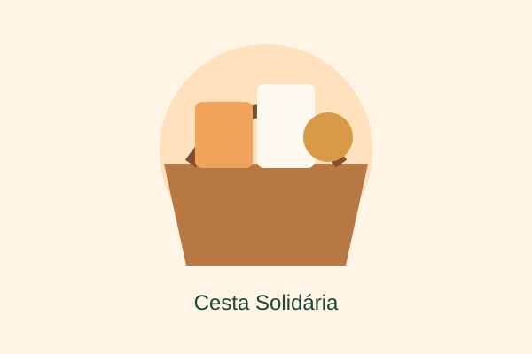
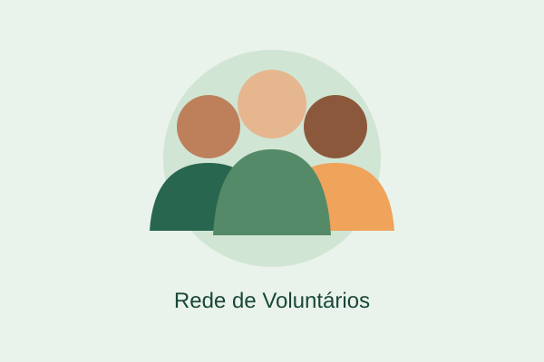

Missão
Levar alimento, acolhimento e esperança a quem precisa.
Acreditamos que toda família merece dignidade, alimento na mesa e esperança para o futuro.
Quero ajudar ♥A Mãos que Transformam é uma ONG fictícia criada para promover a solidariedade e combater a fome. Mobilizamos voluntários para arrecadar alimentos e apoiar famílias em situação de vulnerabilidade.
Levar alimento, acolhimento e esperança a quem precisa.
Construir uma comunidade mais justa e solidária.
Empatia, respeito, transparência e responsabilidade social.
Conheça algumas das ações sociais fictícias desenvolvidas pela nossa organização.

Arrecadação de alimentos não perecíveis para famílias.

Organização de cestas básicas para a comunidade.

Mobilização de pessoas para ações solidárias.
Toda contribuição pode fazer a diferença na vida de uma família.
Contribua com arroz, feijão, macarrão e outros alimentos não perecíveis.
Ajude na organização de campanhas e na separação das doações.
Compartilhe a causa e convide outras pessoas para participar.
Nossa equipe fictícia representa pessoas comprometidas com a solidariedade e a transformação social.
Coordenação de projetos
Organização de campanhas
Mobilização de voluntários
Os nomes e cargos apresentados são fictícios.
Quer participar das nossas ações? Entre em contato pelos meios disponíveis na apresentação do projeto.
Organização: Mãos que Transformam
Atuação: Arrecadação de alimentos e voluntariado
E-mail demonstrativo: contato@exemplo.com
Site acadêmico fictício. O endereço de e-mail é ilustrativo.